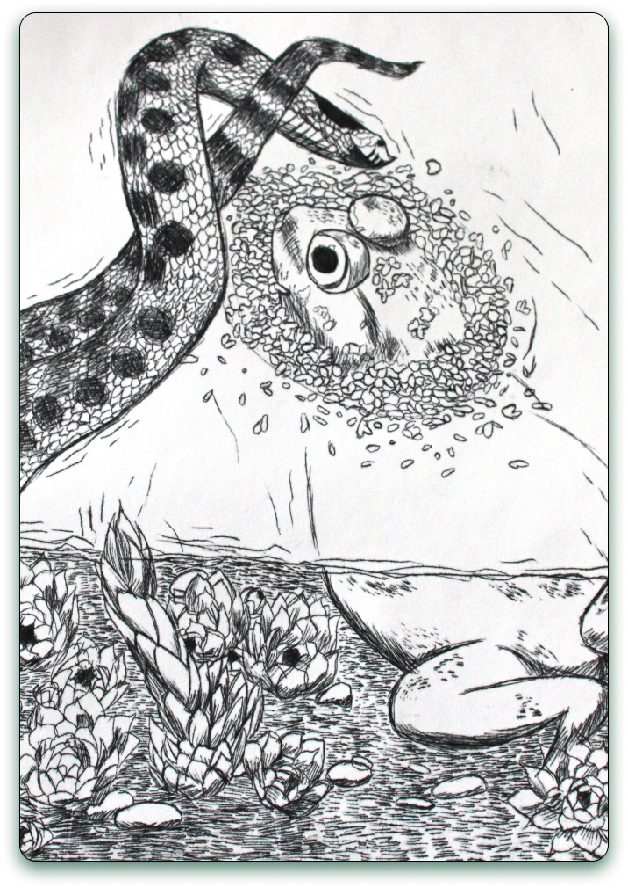
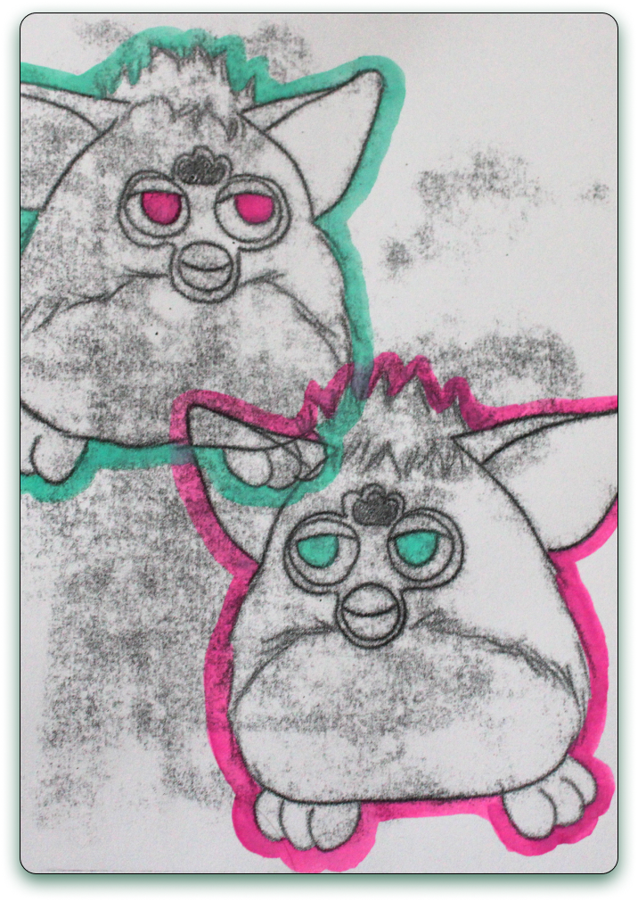
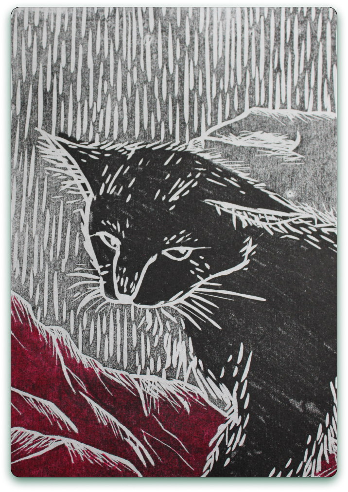
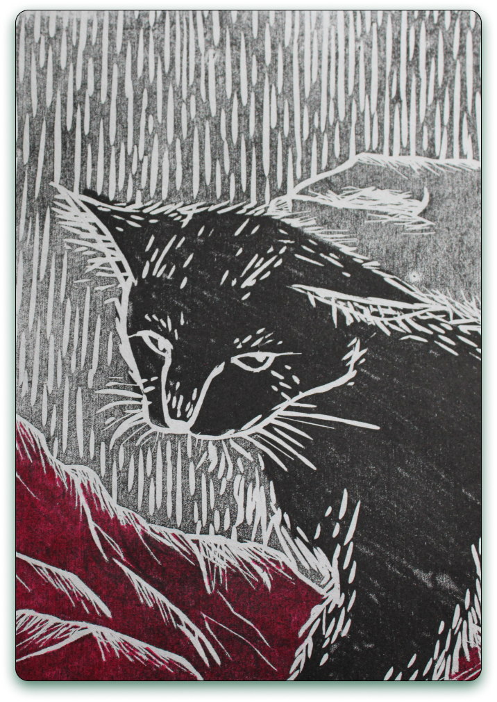
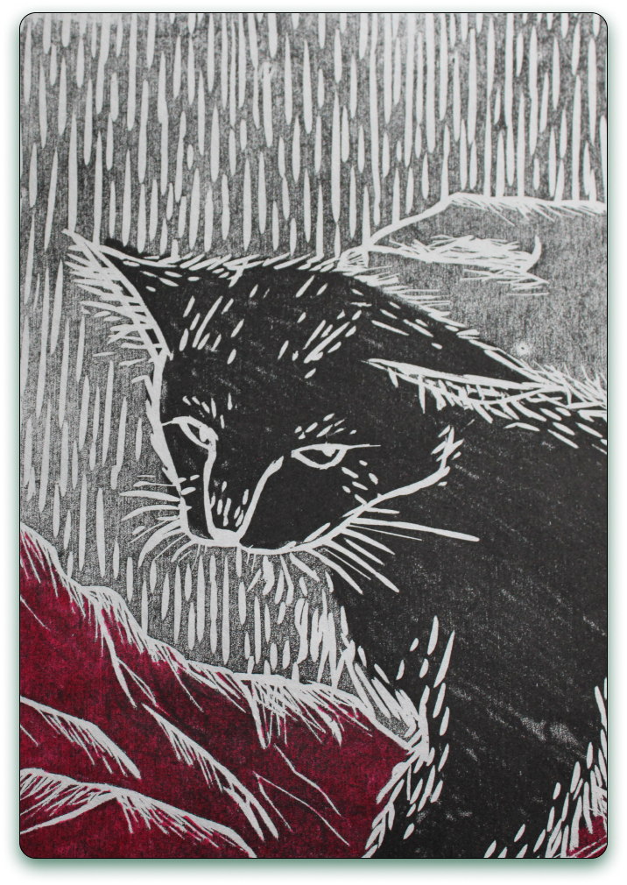

PRINTMAKING
In Printmaking I, I learned various methods and styles of printmaking, including monotype, drypoint, linocut, and woodcut. While the printing process produces many copies per print, below are just a few of the best outcomes.


 

